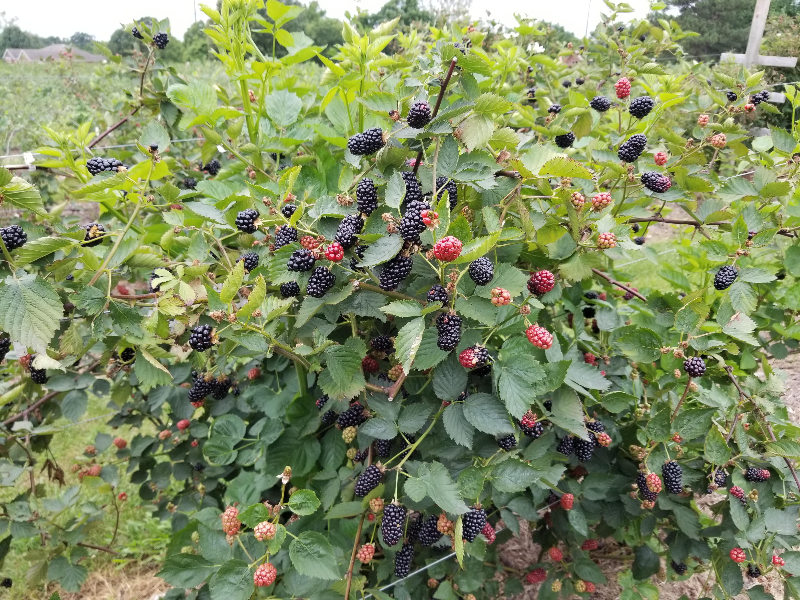
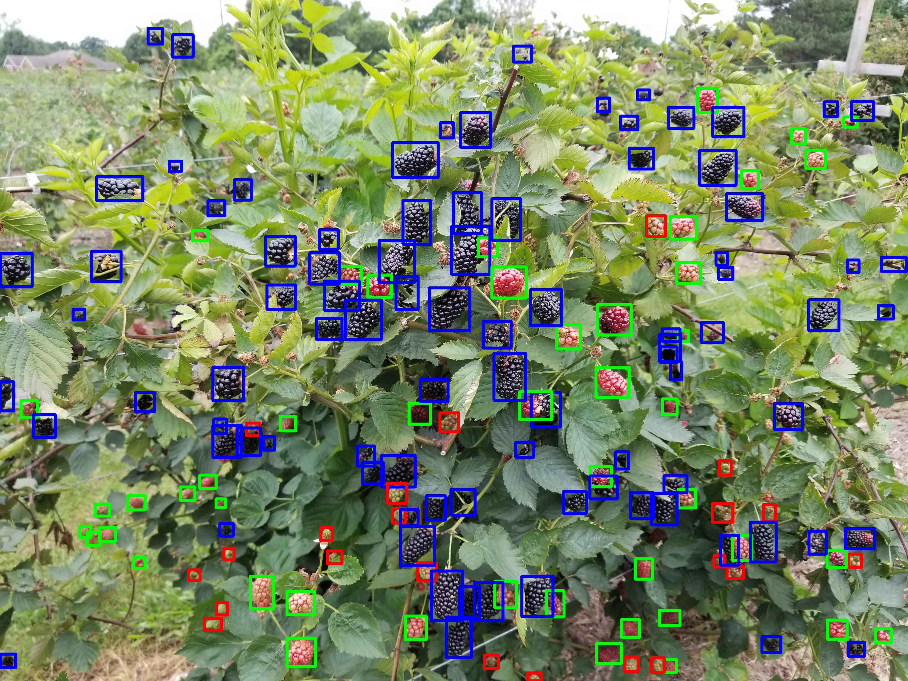
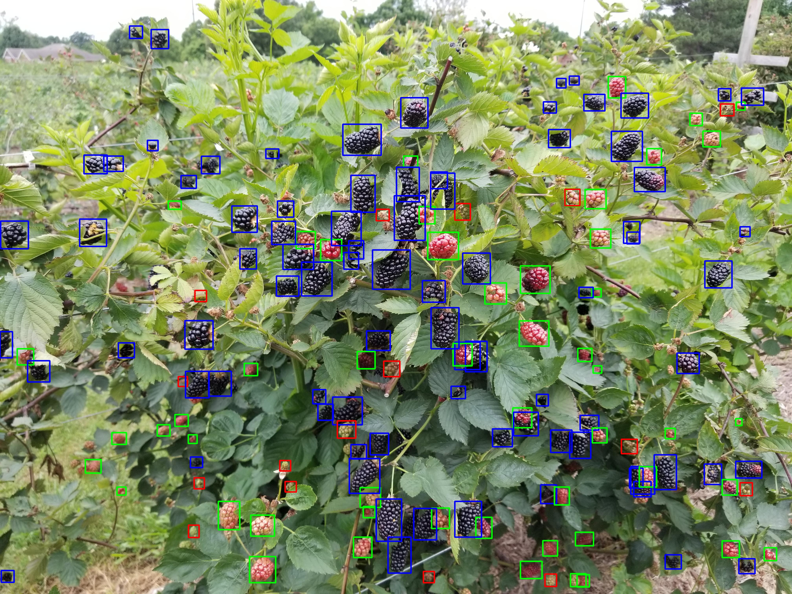
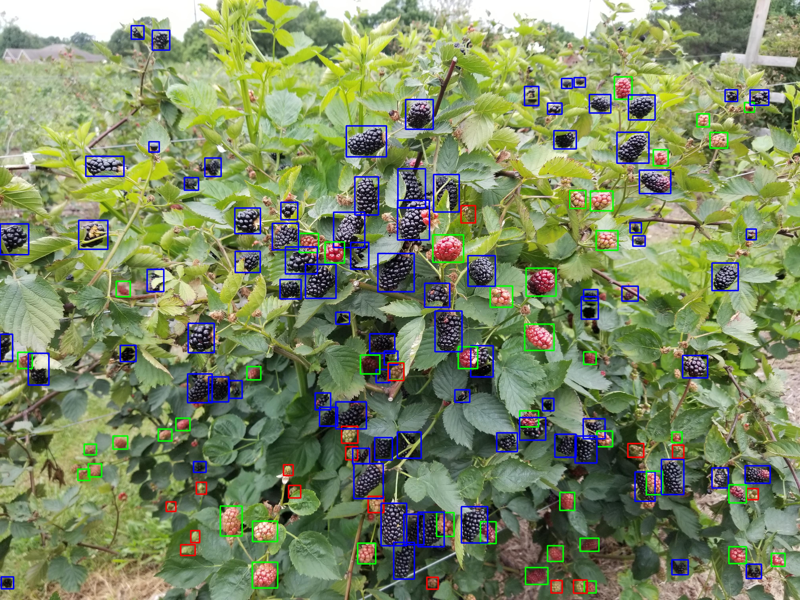
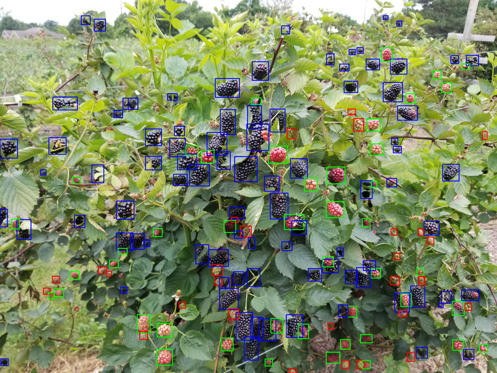

Abstract
Blackberry harvesting is a crucial step for the fresh market production, requiring multiple passes of hand-picking because the berries do not ripen simultaneously, even on a plant, during the harvesting season. The blackberry harvesting process encounters several major hurdles in the U.S., including the shortage of agricultural labor and postharvest fruit quality since the blackberries are highly delicate and sensitive. Developing a computer vision-enabled robotic system for selectively picking blackberries can mitigate issues and secure the profitability of fresh blackberry growers. In-field blackberry detection and localization are extremely challenging attributable to several driving factors, such as the small size of the target berries, multiple levels of berry ripeness, and great variation of outdoor lighting conditions. This study aims to assess and compare the feasibility, accuracy, and efficiency of a series of state-of-the-art YOLO (You Only Look Once) models in detecting multi-ripeness blackberries in the farm conditions. A total of 1,086 images containing three different ripeness levels of blackberries were observed during the two-year harvesting season, including ripe berries (in black color), berries in the ripening stage (in pink color), and unripe berries (in green color). The computer vision pipeline developed in this study had the ability to detect and localize all berries at different ripeness levels, while detecting the ripe berries only was a particular focus. Overall, nine YOLO models (i.e., YOLOv5-x6, YOLOv6-l6, YOLOv7-base, YOLOv7-x, YOLOv7-e6e, YOLOv8-n, YOLOv8-x, YOLOv12-n, and YOLOv12-x) were trained and validated using randomly partitioned 760 (70%) and 108 images (10%), respectively. Among these models, YOLOv7-base outperformed the others in balancing mean Average Precision (mAP) and frames-per-second (FPS) on the test set, which comprised 218 images (20%). More specifically, YOLOv7-base achieved the mAP of 91.1%, F1-score of 84.9%, and inference speed of 12.6 ms per image with 1,024 x 1,024 pixels across all classes of ripeness. In addition, its mAP on the ripe berries was 92.4%, making YOLOv7-base a reliable tool for near real-time, in-field blackberry detection for soft robotic selective harvesting.
Key Results
YOLOv7-base outperformed all nine models in balancing detection accuracy and inference speed.
Best Model — YOLOv7-base (All Ripeness Classes)
Mean Avg. Precision
91.1%
All ripeness classes
F1-Score
84.9%
All ripeness classes
Inference Speed
12.6 ms
Per image (1024×1024 px)
Ripe Berry Detection & Dataset
mAP — Ripe Berries
92.4%
YOLOv7-base
Models Compared
9
YOLOv5 → YOLOv12
Total Images
1,086
2-year harvest season
Dataset Split — 1,086 Images · 2-Year Harvest Season
Model Weights
Best-trained YOLO weights from five randomized dataset splits for multi-ripeness blackberry detection.
★ Best performer: Dataset 2 — weights indicated by -d2 suffix
Files identified by -d2 suffix
correspond to Dataset 2
(best performer)
Study Results

Original Image.
YOLOv5-x6 Inferences

YOLOv6-l6 Inferences.

YOLOv7-base Inferences

YOLOv7-e6e Inferneces
YOLOv7-x Inferneces

YOLOv8-x inferneces
BibTeX
@article{thayananthan2025field,
title={In-Field Multi-Ripeness Blackberry Detection for Soft Robotic Harvesting},
author={Thayananthan, Thevathayarajh and Zhang, Xin and Harjono, Jonathan and Huang, Yanbo and Liu, Wenbo and McWhirt, Amanda L and Threlfall, Renee T and Chen, Yue},
journal={Journal of the ASABE},
volume={68},
number={6},
pages={1073--1089},
year={2025},
publisher={American Society of Agricultural and Biological Engineers}
}